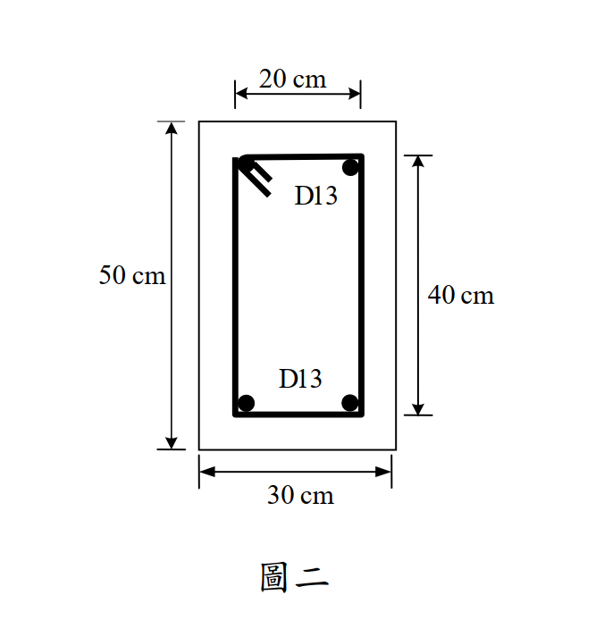
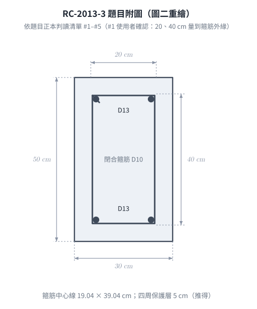
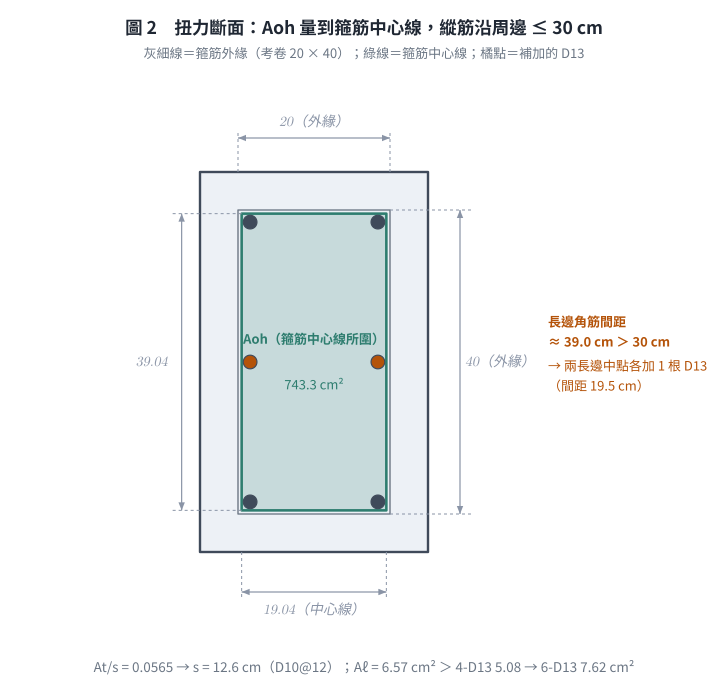

📄 題目正本：考卷原文・附圖・判讀清單（已確認）
RC-2013-3 題目正本
本檔只記錄考卷上寫了什麼、圖上畫了什麼，不含任何解法。解析見同資料夾
RC-2013-3.md。
判讀清單已經使用者確認（凍結）；本檔原則上不再修改（改動須回考卷原圖並記 log）。
| 項目 | 內容 |
|---|---|
| 考卷 | raw/exams/RC-2013_鋼筋混凝土設計與預力.pdf 第 2 頁（背面），第三題 |
| 考年 | 民國 102 年（2013） |
| 配分 | 30 分 |
| 附圖 | RC-2013-3-fig-1.png（圖二：構件斷面） |
| 判讀狀態 | 已確認（2026-11-15 使用者確認；影響答案項目使用者選擇：#1 20×40 量到箍筋外緣（中心線 19.04×39.04）；轉錄 2026-11-15；PyMuPDF 110 dpi 全頁目視，附圖 450 dpi 局部放大；附圖為向量圖，尺寸以 PDF drawings 座標核對；盲讀後才比對既有解析） |
1. 考卷原文（逐字）
三、一鋼筋混凝土構件承受扭矩 $T_u$=1.5 tf-m，閉合箍筋採用 D10，如圖二所示，試求箍筋間距，並檢核斷面之鋼筋配置是否恰當。（已知 $f_c'$=280 kgf/cm²，$f_y$=2800 kgf/cm²）（30 分）
2. 考卷給的公式、附表與參數
- 卷首依據與作答規範：內政部營建署「混凝土結構設計規範」（內政部 100.6.9 臺內營字第 1000801914 號令；中國土木水利學會「混凝土工程設計規範」（土木 401-100）。未依上述規範作答，不予計分。
- 卷首鋼筋表（照錄）：D10，$d_b$＝0.96 cm，$A_b$＝0.71 cm²；D13，$d_b$＝1.27 cm，$A_b$＝1.27 cm²；D25，$d_b$＝2.54 cm，$A_b$＝5.07 cm²；D29，$d_b$＝2.87 cm，$A_b$＝6.47 cm²；D32，$d_b$＝3.22 cm，$A_b$＝8.14 cm²。
- 題文數值：$T_u$＝1.5 tf-m；閉合箍筋 D10；$f'_c$＝280、$f_y$＝2800 kgf/cm²。
- 沒有給：剪力 $V_u$、扭矩屬平衡或諧和扭矩、保護層數值（只能由圖上尺寸推得）、強度折減因數、混凝土種類（常重／輕質）。
- 卷首注意事項：可以使用電子計算器；不必抄題，作答時請將試題題號及答案依照順序寫在試卷上，於本試題上作答者，不予計分；本試題之相關公式、物理常數、符號意義及設計參數未提及時，請自行合理推斷與假設。
3. 附圖

圖面文字照錄：20 cm、D13（上）、50 cm、40 cm、D13（下）、30 cm、圖二。
4. 判讀清單
「把握」標不確定者請優先確認；解讀類項目（題目用字的意思）另標「解讀」。
| # | 項目 | 判讀 | 圖上／題文依據 | 把握 |
|---|---|---|---|---|
| 1 | 20 cm、40 cm 量測基準 | 20 cm、40 cm 的延伸線落在箍筋外緣（粗線外側）：箍筋外緣尺寸 20×40 cm；箍筋中心線尺寸則為 $20-0.96$＝19.04、$40-0.96$＝39.04 cm。使用者定案：量到箍筋外緣，中心線尺寸 19.04×39.04 cm | PDF 座標：箍筋粗線（線寬 2.65 pt）外框 x 339.4–393.8、y 322.7–434.1；20cm 延伸線 x＝339.2、393.4，40cm 延伸線 y＝322.3、434.4，皆對齊粗線外緣 | 不確定（解讀）（影響答案）；使用者確認 |
| 2 | 斷面外形 | $b$＝30 cm、$h$＝50 cm | 30cm 延伸線 x＝323.7、406.8 對齊外框；50cm 延伸線 y＝307.6、449.2 對齊外框 | 確定 |
| 3 | 保護層 | 箍筋外緣四周各 5 cm（$(30-20)/2$、$(50-40)/2$）；考卷沒有直接給保護層 | 由 #1、#2 推得；箍筋上下距外框各約 15 pt、左右約 13–16 pt（圖約略置中） | 確定（解讀） |
| 4 | 縱筋 | 四角各 1 根 D13，共 4 根；D13 標的是縱筋 |
圖上四角黑點；上下各一個 D13 標註 |
確定 |
| 5 | 箍筋 | D10 閉合箍筋（兩肢），左上角 135° 彎鉤；間距為所求 | 題文「閉合箍筋採用 D10」；圖左上角彎鉤 | 確定 |
| 6 | 材料 | $f'_c$＝280、$f_y$＝2800 kgf/cm²（箍筋與縱筋共用） | 題文 | 確定（解讀） |
| 7 | 載重 | 只給扭矩 $T_u$＝1.5 tf-m，沒有剪力 | 題文 | 確定 |
| 8 | 所求 | 箍筋間距；檢核斷面鋼筋配置（縱筋量、號數、間距等）是否恰當 | 題文 | 確定（解讀） |
| 9 | 考卷沒有給 | $V_u$、平衡／諧和扭矩、保護層數值、$\phi$、混凝土種類 | 全題 | 確定 |
轉錄：2026-11-15（RC-U2-1／U2-2 題目正本推廣・批 1）
確認：2026-11-15 使用者確認（RC-U2-1／U2-2 題目正本推廣・批 1，關卡一）
考題編號：RC-2013-3
主分類： RC-U2-2 RC 扭力強度設計
副分類： （無）
設計法： USD 強度設計法
標籤： 扭矩強度 閉合箍筋 空間桁架類比 Ao計算 ph最大間距 縱向扭力筋Al 斷面壓碎驗算 D10箍筋
1. 題目（考卷原文見題目正本）
考卷原文、公式／附表、附圖與判讀清單（已確認）見
RC-2013-3-problem.md。本節只列解題時最容易讀錯的地方與本解使用的記號；題意以題目正本為準。

重繪自考卷圖二，依題目正本判讀清單 #1–#5。本圖攔下的讀錯：20、40 cm 量到箍筋外緣（中心線 19.04×39.04 cm），不是中心線尺寸。
常見誤讀
| 項目 | 正確判讀 | 常見誤讀 |
|---|---|---|
| 20×40 cm | 箍筋外緣尺寸（使用者確認）；中心線 $x_o$＝19.04、$y_o$＝39.04 cm | 當中心線尺寸 20×40（本庫 2026-11-15 前舊解，答 15 cm） |
| D13 | 四角縱筋 | 當箍筋號數 |
| 載重 | 只有扭矩，沒有剪力 | 自行加剪力 |
| 強度折減因數 | 依現行規範扭力 $\phi$＝0.75 | 0.85（舊規範；本庫舊解） |
| 門檻係數 | kgf 制 $T_{th}=0.27\sqrt{f'_c}A_{cp}^2/p_{cp}$ | SI 制 $\sqrt{f'_c}/12$ 直接代 kgf/cm²（舊解得 0.167 tf·m，低估 3.19 倍；不影響「需設計扭力」結論） |
本解記號： $x_o$、$y_o$＝箍筋中心線尺寸；$A_{oh}$；$A_o=0.85A_{oh}$；$p_h$；$A_\ell$＝縱向扭力筋。規範：建築物混凝土結構設計規範（內政部 2023 年版），kgf-cm 制，$\theta$＝45°；箍筋與縱筋 $f_y$＝2800 kgf/cm²。
2. 考題核心精神與出題者意圖 (Core Concepts & Examiner's Intent)
核心精神：
扭力設計採空間桁架類比法：扭矩由閉合箍筋（抗拉腹桿）與斜向混凝土壓力帶（斜壓桿）共同抵抗，縱向鋼筋平衡水平拉力分量。
兩項主要驗算：
- 橫向箍筋：$A_t/s \geq T_u/(2\phi A_o f_{yt})$，由此定 $s$，並檢核 $s\le p_h/8$、30 cm
- 縱向鋼筋：$A_\ell \geq (A_t/s)\,p_h\,(f_{yt}/f_y)$，並檢核圖示 4-D13 的面積與間距（≤ 30 cm、每角一根）
出題陷阱： 20×40 cm 量到箍筋外緣；「檢核配置」包含縱筋面積與間距兩件事。
3. 解題戰略地圖與陷阱分析 (Strategic Roadmap & Trap Analysis)
| 步驟 | 工作 |
|---|---|
| 1 | 由外緣 20×40 扣箍筋直徑得中心線 19.04×39.04 → $A_{oh}$、$p_h$、$A_o$ |
| 2 | 門檻 $\phi T_{th}$ → 確認須設計扭力 |
| 3 | 斷面上限檢核 |
| 4 | $A_t/s$ → $s$；與 $p_h/8$、30 cm 比較 |
| 5 | $A_\ell$、$A_{\ell,\min}$；與 4-D13 比較；縱筋間距 |
關鍵陷阱：
| 陷阱 | 說明 |
|---|---|
| ⚠ 尺寸基準 | 20、40 cm 量到箍筋外緣 → 中心線各扣 $d_b$＝0.96 cm |
| ⚠ $\phi$ | 現行規範扭力 0.75（舊規範 0.85） |
| ⚠ 門檻係數 | kgf 制 0.27，不是 $1/12$ |
| ⚠ 縱筋間距 | 長邊中心距 39 cm > 30 cm，即使面積夠也要加筋 |
3.5 變數層次分析 (Variable Hierarchy Analysis)
最終目標
求 D10 閉合箍筋間距 s，並檢核 4-D13 縱筋是否恰當
本題關鍵公式（依計算順序）
$$\text{Step 1：}x_o = 20-0.96,\ y_o = 40-0.96,\ A_{oh}=x_oy_o,\ p_h=2(x_o+y_o),\ A_o=0.85A_{oh}$$
$$\text{Step 2：}\phi T_{th} = \phi\,0.27\sqrt{f'_c}\,A_{cp}^2/p_{cp}$$
$$\text{Step 3：}\frac{A_t}{s} = \frac{T_u}{2\phi \boxed{A_o} f_{yt}\cot\theta},\qquad s = \frac{A_b}{A_t/s}\le\min(p_h/8,\ 30)$$
$$\text{Step 4：}A_\ell = \frac{A_t}{s}\boxed{p_h}\frac{f_{yt}}{f_y}\cot^2\theta \ \ge A_{\ell,\min}$$
L1：題目直接給定
| 符號 | 數值 | 說明 |
|---|---|---|
| $b, h$ | 30, 50 cm | 斷面外輪廓 |
| 箍筋外緣 | 20 × 40 cm | 圖示（使用者確認量到外緣） |
| D10 | $d_b$＝0.96 cm、$A_b$＝0.71 cm² | 閉合箍筋 |
| D13 | $A_b$＝1.27 cm² × 4 | 四角縱筋 |
| $f'_c$ | 280 kgf/cm² | |
| $f_y$ | 2800 kgf/cm² | 箍筋、縱筋共用 |
| $T_u$ | 150,000 kgf·cm | 無剪力 |
L2：需知識點推導
| 符號 | 公式／來源 | 卡關? |
|---|---|---|
| $x_o$、$y_o$ | $19.04$、$39.04$ cm | ⚠ |
| $A_{oh}$ | $19.04\times39.04 = 743.3$ cm² | |
| $p_h$ | $2(19.04+39.04) = 116.16$ cm | |
| $A_o$ | $0.85\times743.3 = 631.8$ cm² | |
| $A_{cp}$、$p_{cp}$ | $1500$ cm²、$160$ cm | |
| $\phi T_{th}$ | $0.75\times0.27\times16.733\times14{,}062.5 = 47{,}650$ kgf·cm | |
| $A_t/s$ | $150{,}000/(2\times0.75\times631.8\times2800) = 0.05653$ cm²/cm | |
| $s$ | $0.71/0.05653 = 12.6$ cm；$p_h/8 = 14.5$ cm | |
| $A_\ell$ | $0.05653\times116.16 = 6.57$ cm² |
L3：深層知識（不懂就卡住）
| 知識點 | 說明 | 卡關? |
|---|---|---|
| $A_o = 0.85 A_{oh}$ | 剪力流路徑面積小於箍筋中心線圍成面積，0.85 為規範簡化 | |
| $\theta = 45°$ | 非預力構材可取 45°；規範允許 30°–60° | |
| 扭力箍筋間距 $p_h/8$ | 每段 45° 斜裂縫至少穿過一支箍筋 | |
| 縱筋 ≤ 30 cm、每角一根 | 縱筋須沿周長分布以平衡剪力流的軸向分量；角筋提供斜壓桿的錨定 | |
| 量測基準 | $A_{oh}$、$p_h$ 一律以箍筋中心線計 |
4. 步驟化詳細計算過程 (Step-by-Step Detailed Calculation)
Step 1：斷面幾何
圖示 20×40 cm 為箍筋外緣，中心線各扣一個箍筋直徑（0.96 cm）：
$$x_o = 20-0.96 = 19.04\ \text{cm},\qquad y_o = 40-0.96 = 39.04\ \text{cm}$$
$$A_{oh} = 19.04 \times 39.04 = \boxed{743.3\ \text{cm}^2},\qquad A_o = 0.85 \times 743.3 = \boxed{631.8\ \text{cm}^2},\qquad p_h = 2(19.04 + 39.04) = \boxed{116.16\ \text{cm}}$$
$$A_{cp} = 30 \times 50 = 1500\ \text{cm}^2 \qquad p_{cp} = 2(30+50) = 160\ \text{cm}$$
Step 2：門檻值檢查（是否需要扭力鋼筋）
$$\phi T_{th} = 0.75 \times 0.27\sqrt{280} \times \frac{1500^2}{160} = 0.75 \times 4.518 \times 14{,}062.5 = \boxed{47{,}650\ \text{kgf·cm} = 0.477\ \text{tf·m}}$$
$$T_u = 1.5\ \text{tf·m} > 0.477\ \text{tf·m} \quad \Rightarrow \quad \textbf{需設計扭力鋼筋} ✓$$
（題目未說明平衡或諧和扭矩，以 $T_u$＝1.5 tf·m 全額設計。）
Step 3：斷面壓碎驗算
純扭力（$V_u = 0$）：
$$\text{左側：} \frac{T_u\,p_h}{1.7\,A_{oh}^2} = \frac{150{,}000 \times 116.16}{1.7 \times 743.3^2} = \frac{17{,}424{,}000}{939{,}240} = \boxed{18.55\ \text{kgf/cm}^2}$$
$$\text{右側：} \phi\left(\frac{V_c}{b_w d} + 2.12\sqrt{f'_c}\right) = 0.75\times(8.87 + 35.47) = \boxed{33.26\ \text{kgf/cm}^2}$$
$$18.55 < 33.26 \quad \Rightarrow \quad \textbf{斷面尺寸足夠} ✓$$
（保守略去 $V_c/b_wd$ 項時右側 26.60，仍通過。）
Step 4：閉合箍筋間距（求解 s）
$$\frac{A_t}{s} = \frac{T_u}{2\phi A_o f_{yt}} = \frac{150{,}000}{2 \times 0.75 \times 631.8 \times 2800} = \frac{150{,}000}{2{,}653{,}560} = \boxed{0.05653\ \text{cm}^2/\text{cm}}$$
$$s_{\text{calc}} = \frac{0.71}{0.05653} = 12.56\ \text{cm},\qquad s_{\max} = \min\!\left(\frac{116.16}{8},\ 30\right) = 14.52\ \text{cm}$$
強度控制：
$$\boxed{s = 12\ \text{cm}} \quad \text{（D10@12 cm 閉合箍筋；計算值 12.6 cm）}$$
最少扭力箍筋：$2A_t/s = 2\times0.71/12 = 0.118 \ge \max(0.2\sqrt{f'_c},3.5)\,b_w/f_{yt} = 3.5\times30/2800 = 0.0375$ ✓
Step 5：縱向扭力筋需求
$$A_\ell = \frac{A_t}{s} \times p_h \times \frac{f_{yt}}{f_y} \times \cot^2 45° = 0.05653 \times 116.16 \times 1.0 = \boxed{6.57\ \text{cm}^2}$$
最少縱向扭力筋（兩式取較小者）：
$$A_{\ell,\min} = \frac{1.33\sqrt{f'_c}A_{cp}}{f_y} - \max\!\left(\frac{A_t}{s},\ \frac{1.75b_w}{f_{yt}}\right)p_h\frac{f_{yt}}{f_y} = \frac{1.33\times16.733\times1500}{2800} - \max(0.05653,\ 0.01875)\times116.16 = 11.92 - 6.57 = 5.36\ \text{cm}^2$$
$A_\ell = 6.57 > 5.36$ → $A_\ell = 6.57$ cm² 控制。
Step 6：檢核斷面鋼筋配置（圖二）
縱向扭力筋面積
$$A_{\ell,\text{prov}} = 4 \times 1.27 = 5.08\ \text{cm}^2 < A_{\ell,\text{req}} = 6.57\ \text{cm}^2 \quad \Rightarrow \quad \textbf{面積不足 ❌}$$
縱向扭力筋間距
- 短邊：$x_o = 19.04$ cm → 角筋間距 ≤ 30 ✓
- 長邊：$y_o = 39.04$ cm → 角筋間距 39 cm > 30 cm ❌
兩長邊中點各加 1 根 D13：長邊間距 19.5 cm ≤ 30 ✓
$$A_{\ell,\text{prov,revised}} = 6 \times 1.27 = \boxed{7.62\ \text{cm}^2} > 6.57\ ✓$$
縱筋號數 D13（1.27 cm）≥ $0.042s$＝0.50 cm 且 ≥ D10 ✓

圖 2 $A_{oh}$ 取箍筋中心線，縱向扭力筋沿周邊間距 ≤ 30 cm。本圖攔下的錯：直接以外緣 20×40 計 $A_{oh}$，以及只配四角縱筋而長邊間距超限。
結論彙整
| 項目 | 需求 | 圖示提供（4 D13） | 修正後（6 D13） | 結論 |
|---|---|---|---|---|
| 箍筋 $A_t/s$ | 0.0565 cm²/cm | D10 → $s$＝12.6 cm | D10@12 cm | ✓ |
| 箍筋間距上限 | ≤ 14.5 cm | — | 12 cm ✓ | ✓ |
| $A_\ell$ | 6.57 cm² | 5.08 cm² ❌ | 7.62 cm² ✓ | 需增設 |
| 縱筋間距 | ≤ 30 cm | 長邊 39 > 30 ❌ | 19.5 cm ✓ | 需增設 |
$$\boxed{\text{箍筋 D10@12 cm（計算 12.6 cm）；縱向 D13 需由 4 根增為 6 根（兩長邊中點各加 1 根）}}$$
5. 關鍵爭議點與進階探討 (Critical Issues & Advanced Discussion)
① 尺寸基準與規範版本的影響
| 讀法 | $\phi$ | $A_{oh}$ | $p_h$ | $A_t/s$ | $s$ | $A_\ell$ |
|---|---|---|---|---|---|---|
| 外緣 20×40（本解） | 0.75 | 743.3 | 116.16 | 0.05653 | 12.6 cm | 6.57 cm² |
| 外緣 20×40 | 0.85 | 743.3 | 116.16 | 0.04988 | 14.2 cm | 5.79 cm² |
| 中心線 20×40 | 0.75 | 800 | 120 | 0.05252 | 13.5 cm | 6.30 cm² |
| 中心線 20×40（舊解） | 0.85 | 800 | 120 | 0.04635 | 15 cm（$p_h/8$ 控制） | 5.56 cm² |
縱筋結論（4 根 → 6 根）四種讀法相同。
② $\theta = 45°$ vs 其他角度
$\theta < 45°$（如 36°）：$A_t/s$ 減少、$A_\ell$ 增加；規範限制 $30° \leq \theta \leq 60°$。本題縱筋已不足，取 $\theta<45°$ 更不利。
③ kgf 制係數的由來
規範 SI 式 $\sqrt{f'_c}$（MPa）換為 kgf/cm² 時乘 $\sqrt{10.197}=3.19$：門檻 $\tfrac1{12}\to0.27$、斷面上限 $0.66\to2.12$。舊解門檻用 $\sqrt{f'_c}/12$ 直接代 kgf/cm²，得 0.167 tf·m（應為 0.477），本題不影響結論，但在接近門檻的題目會誤判。
④ 扭矩遠大於門檻的工程意義
$T_u$ 約為 $\phi T_{th}$ 的 3.1 倍，需完整扭力配筋；若扭矩屬諧和扭矩，可依規範折減至 $\phi T_{cr}$（＝$4\phi T_{th}$＝1.91 tf·m > 1.5，本題不適用折減）。
修正日期：2026-11-15（§1 改為指向題目正本，插入重繪附圖 figs/RC-2013-3-fig-1-problem.svg；舊 §1 重述改寫為常見誤讀與本解記號；本行非答案勘誤）
修正日期：2026-11-15（解析勘誤：20×40 cm 改讀為箍筋外緣（中心線 19.04×39.04，使用者定案）；改依現行台灣規範（建築物混凝土結構設計規範 2023 年版）扭力 φ＝0.75、門檻 kgf 制 0.27√f'c（原 √f'c/12 誤代）；s 15 cm → 12.6 cm（取 D10@12）、Aℓ 5.56 → 6.57 cm²，縱筋 4 → 6 根 D13 結論不變；驗證：盲解比對 + 勘誤腳本重算 MISMATCHES: 0）
修正日期：2026-11-15（圖解補繪（非勘誤）：新增 figs/RC-2013-3-fig-2-section.svg，腳本 figs/gen_RC-2013-3.py，可重跑；答案不變）